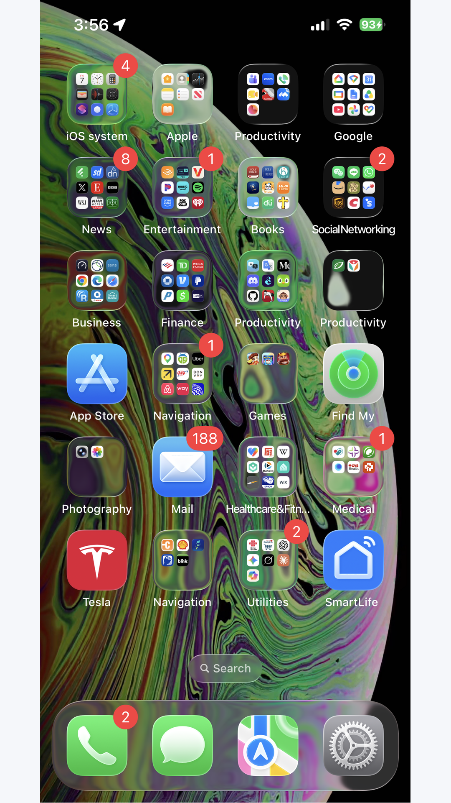
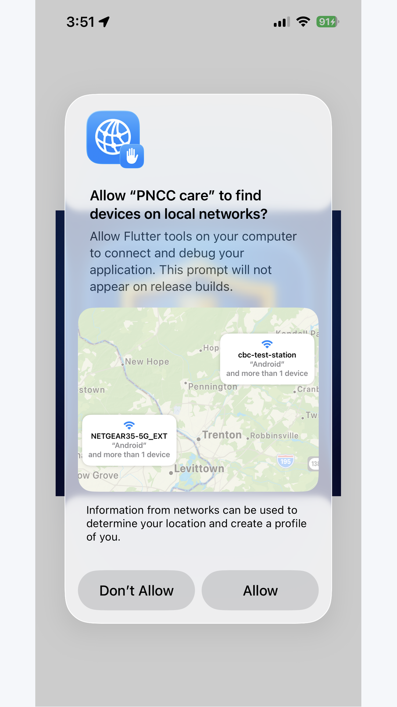
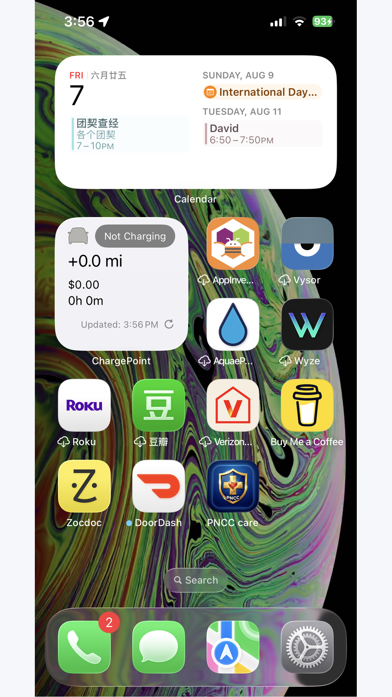
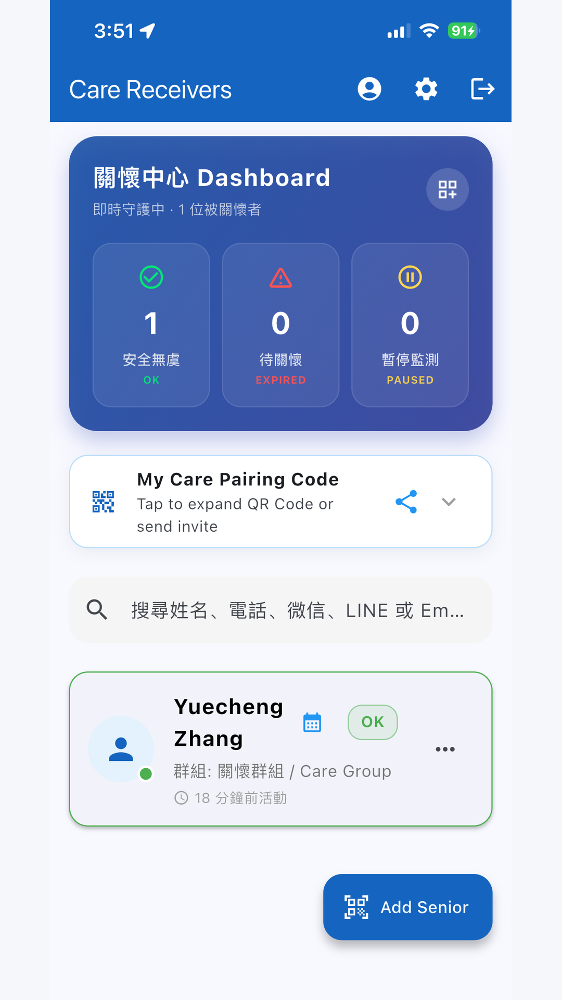

❤
PNCC Care
Engineering Humanity: Dignity for Elders, Peace of Mind for Families
A Monumental Technical Dossier, Comprehensive Architectural Analysis, and Fully Illustrated Non-Technical User Manual.
Features complete breakdowns of every setting, functional consequences, failure modes, clinical caregiver protocols, and multi-device IoT integration.
📱 iPhone, iPad & Android
⌚ watchOS Standalone Companion
🗣 Amazon Alexa Voice Check-In
🌙 Bedside Nightstand Ambient Clock
🛡 2-Tier Timers & Fall Sensor
🔒 100% Private / Zero Ad Trackers
Product Version: v1.1.5 (Build 25) · Release Date: November 2026
Author / Lead Architect: ZigzagYC & PNCC Care Core Engineering Team
App Store ID: 6742517865 · App ID: com.zigzagyc.dailyNotify
Reconciling family anxiety and elder dignity in an aging society. Why conventional monitoring paradigms fail, and how PNCC Care pioneers 'Passive-Active Balance'.
1.1 The Solitary Senior Epidemic & The Sandwich Generation Burden
Throughout developed economies, demographic shifts have produced unprecedented numbers of solitary elders. Adult children work demanding jobs or reside in distant cities. Simultaneously, the 'Sandwich Generation' (individuals aged 45–65) finds itself crushed between raising teenage children and overseeing elderly parents living alone.
This produces chronic psychological strain: the adult child lives in constant fear that an accident has occurred behind closed doors, while the aging parent feels a relentless pressure to demonstrate they are not becoming a burden to their family.
1.2 The Psychological Failure of Surveillance, Daily Interrogation & Panic Pendants
Most digital health and eldercare solutions are designed from an engineering-first or institutional viewpoint, completely ignoring the psychological self-esteem of the senior:
- Indoor Surveillance Cameras: Placing cameras in living spaces violates human dignity. Elders report feeling like laboratory specimens or prisoners under probation, frequently covering lenses with towels or unplugging routers.
- Routine Interrogation Phone Calls: Calling an 80-year-old father daily solely to ask 'Did you take your pills? Are you still alive?' infantilizes the parent, turning filial love into a resented clinical inspection.
- Medical Emergency Pendants: Over 70% of purchased panic buttons end up locked in nightstand drawers. Seniors refuse to wear them in public because they broadcast infirmity and frailty to neighbors.
1.3 The 'Passive-Active Balance' Axiom: Cognitive, Motor & Visual Ergonomics
PNCC Care was designed to invert this paradigm: A safety check-in must never feel like an inspection; it must be an uplifting, effortless morning ritual taking under 2 seconds.
We analyzed age-related sensory and motor degradation:
- Presbyopia & Macular Degeneration: Addressed with high-contrast palette tokens (WCAG AAA ratio > 7:1) and massive 48dp+ interactive cards.
- Essential Tremors & Reduced Finger Dexterity: Addressed by replacing tiny icon buttons with full-width target hit-areas and haptic confirmation.
- Cognitive Friction & App Trapping: Addressed by automatically minimizing the application 500ms after a check-in is logged, guaranteeing that elders never feel trapped inside a confusing smartphone interface.
1.4 Product Value Proposition & The Triple-Benefit Matrix
PNCC Care delivers balanced value across the entire family care network:
| Stakeholder | Primary Value Delivered | Emotional & Practical Benefit |
|---|
| Senior (長輩) | Zero-Stigma, Zero-Effort Morning Confirmation | Maintains full home privacy and personal independence; enjoys spiritual devotionals. |
| Caregiver (家屬) | Multi-Senior Live Dashboard with Two-Tier Warning Buffer | Eliminates daily anxiety; replaces panic calls with gentle, verified reassurance. |
| Community / Church | Scalable QR Pairing & Multi-Caregiver Support | Enables church volunteers and neighbors to form collaborative care circles around vulnerable elders. |
Technical blueprints of the unified Flutter core, watchOS native SwiftUI companion, Alexa voice skill, and platform channel bridges.

Chapter 2: Full-Stack System Architecture & Cross-Platform Engineering
2.1 Cross-Platform System Topology
PNCC Care leverages a clean, modular cross-platform architecture that orchestrates native platform capabilities with cloud microservices:
- Mobile Client: Built on Flutter 3.x / Dart 3.x with Provider-based reactive state management, supporting iOS 15.6+ and Android 8.0 (API 26) through Android 16 (API 36).
- Wearable Companion: Fully native SwiftUI application running on watchOS 9.0+ communicating via Apple's
WatchConnectivity framework. - Voice Gateway: Custom Amazon Alexa Voice Skill running on AWS Lambda (Node.js ASK SDK v2) integrated with AWS Polly neural text-to-speech.
- Cloud Persistence: Google Cloud Firestore NoSQL datastore with real-time websocket snapshot listeners, atomic transactions, and role-based security rules.
2.2 Apple Watch Companion (watchOS Architecture)
The Apple Watch companion app (PNCCWatch Watch App) is engineered for autonomous wrist operation:
- Dual Operating Modes: Operates in tethered mode when the iPhone is in Bluetooth proximity, and autonomous mode when the elder is walking or gardening away from their phone.
- WatchConnectivity Session Manager: Implements
WCSessionDelegate. When 'I'm OK' is tapped, it creates a cryptographically signed payload containing the UTC timestamp, battery level, and check-in source, caching locally if disconnected and flushing upon reconnection. - HealthKit Integration: Configured with
HKHealthStore background delivery permissions (NSHealthShareUsageDescription and NSHealthUpdateUsageDescription) to verify physical active energy.
2.3 Amazon Alexa Custom Voice Skill Architecture
For seniors unable to reach their phone or with severe arthritis, the Alexa skill provides hands-free safety:
- Voice Utterance Processing: Supports English and natural Mandarin Chinese utterances (e.g., 'Alexa, tell Daily Notify I am okay', 'Alexa，跟 Daily Notify 說我很好').
- AWS Polly SSML Synthesis: Responses utilize AWS Polly's neural Chinese voice (
Zhiyu) with customized speech rate and pitch prosody tags to sound warm, gentle, and respectful to elders. - Cryptographic Device Pairing: A 6-digit rolling numeric code pairs the Echo speaker with the user's Firestore UID without requiring manual OAuth browser redirects.
2.4 Android & iOS Native Platform Channel Bridges
Deep platform integration enables seamless background operation:
- Android Daydream (
BibleDreamService.kt): Integrates with Android's system screen saver API, converting docked or charging devices into bedside ambient clocks. - Android BroadcastReceivers: Listens for
ACTION_POWER_CONNECTED, ACTION_POWER_DISCONNECTED, and ACTION_USER_PRESENT (screen unlock) to register passive life signs. - iOS ActivityKit (
ActivityKitHelper.swift): Renders real-time Live Activities and Dynamic Island widgets on iOS 16.1+, updating timer countdowns in hardware. - iOS App Group Storage (
AppGroupHelper.swift): Shares check-in timestamps and user preferences across the main Runner app, the Watch app, and the Widget extension.
A candid analysis of technical obstacles, production crashes, battery management constraints, and how our team resolved them.

Chapter 3: Engineering Challenges, Real-World Pitfalls & Breakthrough Solutions
3.1 Challenge 1: The App Store Thin Binary & Missing Framework Crash
During the v1.1.4 release, our team encountered an acute production failure: after passing Apple review, the app crashed immediately upon launch on iPhone 13 devices.
Root Cause Analysis: When adding the native watchOS target and WidgetKit extension, Xcode's project.pbxproj inadvertently omitted Flutter's Thin Binary shell script build phase (xcode_backend.sh embed_and_thin). As a result, the produced IPA (15.8 MB) lacked Payload/Runner.app/Frameworks/Flutter.framework and App.framework. Upon launch, Apple's dynamic linker (dyld) aborted execution with image not found: @rpath/Flutter.framework/Flutter.
Permanent Resolution: We re-inserted build phase 3B06AD1E1E4923F5004D2608 /* Thin Binary */ into Runner's buildPhases directly following Embed Watch Content. We emptied inputPaths to eliminate Xcode 15 dependency cycle warnings, successfully restored dynamic library embedding, verified the 36.7 MB binary on physical iPhone 13 hardware, and incremented the train to v1.1.5 (Build 25).
3.2 Challenge 2: Background Execution Throttling & Battery Optimization Policies
Modern mobile operating systems strictly throttle background CPU execution to preserve battery life:
- iOS BackgroundTasks & Energy Budgeting: iOS limits arbitrary background code execution. We resolved this by combining periodic
BGAppRefreshTask schedules with silent high-priority remote APNs push notifications and HealthKit workout sessions. - Android Doze Mode & Manufacturer Whitelisting: Android aggressive battery managers (e.g. Xiaomi MIUI, Huawei EMUI) terminate background services. We engineered foreground sticky services, configured battery optimization ignore prompts, and implemented system broadcast listeners that wake up transiently on power and unlock events.
3.3 Challenge 3: False Alarm Mitigation & The Two-Tier Timer Mathematical Model
The primary reason families abandon elder monitoring apps is false alarm fatigue. If an emergency siren sounds on an adult child's phone merely because Grandma took an afternoon nap or went shopping, trust collapses.
We developed a rigorous Two-Tier Inactivity Model governed by the following state equation:
State(t) = GREEN (Safe), for t_now - t_last <= Timer_1
State(t) = AMBER (Warning), for Timer_1 < t_now - t_last <= Timer_1 + Timer_2
State(t) = RED (Emergency), for t_now - t_last > Timer_1 + Timer_2
Timer 1 provides a generous daily window (default: 24h). Timer 2 provides an amber warning buffer (default: 60m). High-priority family alarms only fire if both timers expire with zero check-in signals.
3.4 Challenge 4: Virtual 3-Button Navigation Bar Occlusion on Legacy Hardware
Many seniors in Asian and developing markets use legacy Android smartphones (such as Xiaomi Mi 9) featuring persistent virtual three-button navigation bars (Back, Home, Recents). Standard Flutter SafeArea widgets frequently left dialog confirmation buttons and bottom version labels partially covered by the system navigation buttons.
Solution: We implemented a native platform channel query to obtain exact system WindowInsets metrics, adding dynamic bottom padding multipliers to all dialogs and modals, and engineered a responsive two-column landscape layout for horizontal charging docks.
Detailed breakdown of the Senior Dashboard and six independent modalities designed to fit naturally into an elder's daily routine.

Chapter 4: The Senior Experience: Ergonomics & Six Multimodal Check-In Triggers
4.1 Senior Dashboard Anatomy: 48dp+ Unified Giant Safety Card & 500ms Auto-Dismissal
The senior interface is intentionally constrained to a single, non-scrolling primary viewport:
- Consolidated Safety Card: Merges status indication ('All is Well') and the primary touch target into one prominent 48dp+ high-contrast interactive card.
- 500ms Auto-Dismissal: When pressed, the button triggers physical haptic feedback, displays an animated checkmark, and minimizes/closes the app automatically after 500ms. The senior never feels trapped inside an app.
4.2 The Six Multimodal Check-In Triggers
| Trigger Modality | Hardware / Platform | How to Use | Technical Reaction & Consequence |
|---|
| 1. Smartphone Giant Button | iOS & Android Phones/Tablets | Open app, tap green card. | Resets Timer 1 and Timer 2, updates Firestore timestamp, triggers haptic vibration, updates home widget, auto-exits. |
| 2. Apple Watch Companion | watchOS 9.0+ Series 4 ~ 10 / Ultra / SE | Glance at wrist, tap 'I'm OK · 我很好'. | Sends encrypted packet via WatchConnectivity (WCSession) to iPhone. Caches locally if disconnected and flushes upon reconnection. |
| 3. Amazon Alexa Voice Skill | Amazon Echo, Echo Dot, Echo Show | Speak aloud: 'Alexa, tell Daily Notify I am okay.' | Echo contacts AWS Lambda, validates 6-digit device token, resets cloud timer, and Alexa recites daily scripture in English or Mandarin. |
| 4. Bedside Nightstand Screen Saver | Charging dock phone / tablet (Daydream) | Touch the dark clock screen upon waking. | Displays ambient OLED clock and scripture. Touching anywhere dismisses the clock AND silently registers today's check-in! |
| 5. Desktop & Lock Screen Widgets | iOS WidgetKit & Android AppWidget | Tap green widget button on home screen. | Intercepts background tap without opening full app, updates local storage, syncs to cloud, and flips widget state to 'Safe'. |
| 6. 3-Axis Fall Sensor | Built-in accelerometer & gyroscope | Passive. Phone senses heavy impact. | Sounds local alarm siren and displays 30-second red cancel countdown. If not dismissed within 30s, dispatches emergency alerts. |
An encyclopedic breakdown of every toggle, slider, timer, and option in PNCC Care, explaining the exact system consequences of each setting.

Chapter 5: Exhaustive Configuration & Functional Consequence Catalog
5.1 Safety Timers & Vacation Configurations
| Setting Name | Code Key & Type | Valid Range & Default | Detailed Mechanism & Functional Consequence |
|---|
| Check-In Frequency (Timer 1) | checkInFrequency (int) | 60 to 2880 mins
(Default: 1440m / 24h) | Mechanism: The active 'Safe' window countdown.
Consequence: When Timer 1 expires, status turns from Green (Safe) to Amber (Warning). A gentle reminder notification is sent to the senior. Setting to 0 turns off safety monitoring. |
| Alert Timeout (Timer 2) | alertTimeout (int) | 0 to 720 mins
(Default: 60m grace, or 0) | Mechanism: The grace buffer after Timer 1 expires.
Consequence: When Timer 2 expires, status flips to Red (Emergency). High-priority push notifications and alert banners are dispatched to all caregivers. Setting to 0 means emergency alerts fire immediately after Timer 1 expires. |
| Vacation & Pause Monitoring | pauseStartDate,
pauseEndDate (DateTime) | Date Range Picker | Mechanism: Suppresses timer execution during holidays or hospital stays.
Consequence: All countdowns freeze. Caregiver dashboard shows a calm grey 'Vacation' badge. Zero false alarms are dispatched during the selected window. |
5.2 Passive Activity Tracking & Hardware Automations
| Setting Name | Code Key & Type | Valid Range & Default | Detailed Mechanism & Functional Consequence |
|---|
| Battery Charger Activity Tracking | enableBatteryActivityTracking (bool) | Enabled / Disabled
(Default: Enabled) | Mechanism: Listens for system battery plug-in / unplug broadcasts.
Consequence: When elder plugs in phone at bedtime or unplugs in the morning, the system silently resets the inactivity timer! Elder is confirmed safe with zero manual app interaction. |
| Screen Unlock Activity Tracking | enableUnlockActivityTracking (bool) | Enabled / Disabled
(Default: Enabled) | Mechanism: Intercepts ACTION_USER_PRESENT lock-screen events.
Consequence: If elder unlocks their phone to check photos, read news, or take a call, it registers as a valid 'sign of life' and resets Timer 1. |
| Apple Health / Google Fit Sync | enableHealthActivitySync (bool) | Enabled / Disabled
(Default: Disabled) | Mechanism: Reads HealthKit / Google Fit step counts and active energy.
Consequence: If the senior walks more than 100 steps in an hour or their Apple Watch records normal heart activity, it automatically logs activity. |
| Fall Detection Sensitivity | fallDetectionSensitivity (String) | 'high', 'medium', 'low'
(Default: 'medium') | Mechanism: Adjusts 3-axis accelerometer vector magnitude threshold.
Consequence: 'High' triggers on 1.8G impacts (soft carpet); 'Medium' on 2.5G; 'Low' on 3.2G. Always initiates a 30-second local cancel window before alerting caregivers. |
| Shake to Panic Alert | enableShakeToPanic (bool) | Enabled / Disabled
(Default: Disabled) | Mechanism: Evaluates continuous high-frequency shake gestures.
Consequence: Violently shaking the phone for 3 seconds triggers a 10-second panic countdown, then dispatches immediate emergency alerts to family contacts. |
5.3 Geofencing & Safe Zones
| Setting Name | Code Key & Type | Valid Range & Default | Detailed Mechanism & Functional Consequence |
|---|
| Enable Safe Zones | enableGeofencing (bool) | Enabled / Disabled | Mechanism: Background GPS circular boundary monitoring.
Consequence: When enabled, safety check-in countdowns are paused while inside home coordinates. If elder wanders outside the safe perimeter, monitoring activates or alerts caregivers. |
| Safe Zone Coordinates | safeZoneLatitude,
safeZoneLongitude (double) | Interactive Map Picker | Consequence: Pins the center of the safe zone (e.g. Senior's Residence). |
| Safe Zone Radius | safeZoneRadius (double) | 50m, 100m, 200m, 500m | Consequence: Sets the geographical radius. A 200m radius covers the elder's home and immediate garden/driveway. |
5.4 UI Language, Scriptures & Caregiver Banners
| Setting Name | Code Key & Type | Valid Range & Default | Detailed Mechanism & Functional Consequence |
|---|
| App UI Language | appLocale (Locale) | English / Traditional Chinese / Simplified Chinese | Consequence: Changes all navigation menus, dialogs, and button labels. Decoupled from Scripture language. |
| Bible Translation | bibleVersion (String) | CUV (和合本), NIV, KJV | Consequence: Selects the offline scripture translation. Seniors can read Chinese scriptures while adult children use English UI. |
| Auto-Minimize on Check-In | minimizeOnCheckIn (bool) | Enabled / Disabled
(Default: Enabled) | Consequence: If enabled, app auto-exits to home screen 500ms after tapping check-in. If disabled, app stays open on Senior Dashboard. |
| Caregiver Alert Banner Flashing | enableCaregiverAlertFlashing (bool) | Enabled / Disabled
(Default: Enabled) | Consequence: If enabled, Red alerts pulse rhythmically to catch attention. If disabled, banner remains solid. |
| Live Activities (iOS Dynamic Island) | liveActivityShowNormal,
liveActivityShowExpired (bool) | Normal / Expired toggles & color picker | Consequence: Controls whether the Dynamic Island shows the countdown during normal hours or only when expired. |
Complete guide on biometric onboarding, dynamic role switching, and 3-second AES-encrypted QR code pairing.

Chapter 6: Account Lifecycle, User Roles & Establishing Family Caring Circles
6.1 Onboarding & Password-Free Biometric Authentication
Getting started requires zero complicated configuration:
- Install App: Download 'PNCC Care' from the Apple App Store or Android APK.
- Select Biometric Sign-In: Tap Sign in with Apple on iPhone/iPad to authenticate via Face ID / Touch ID, or tap Sign in with Google on Android.
- Email Registration: Available for families preferring a shared dedicated email.
6.2 Role Selection & Dynamic Transition Without Re-login
Users choose from three specialized roles:
- Senior Mode: Giant green check-in card, daily scripture, bedtime nightstand clock.
- Caregiver Mode: Multi-senior dashboard with live color badges and emergency call shortcuts.
- Dual Mode: Bottom navigation bar allowing sandwich generation users to check in while monitoring parents.
To switch roles anytime: Open Settings (⚙️) → scroll down to 'Switch Profile' (⇄) → tap your desired card. The interface updates instantly without signing out!
6.3 Establishing Caring Relations: 3-Second Encrypted QR Pairing
- Senior Phone: Open Settings → tap 'My Caregivers' (我的照護者). The screen presents the senior's private, rotating AES-encrypted QR code.
- Caregiver Phone: Open Caregiver Dashboard → tap the round blue '+' button → tap 'Scan QR Code'.
- Scan & Pair: Point the caregiver's camera at the senior's screen. The senior's card appears on the caregiver's dashboard instantly. Multiple siblings can scan the same code to form a care circle.
Field guidelines and standard operating procedures for caregivers managing Green, Amber, Red, Fall, and Offline states.
Chapter 7: Caregiver Clinical Protocols & Real-Time Condition Handling
7.1 The Five Real-Time Conditions & Clinical SOP
| Real-Time State | Visual Indicator | What It Means | Caregiver Action Protocol (Clinical SOP) |
|---|
| Condition 1: Safe | GREEN | Elder checked in within safe window. | Total peace of mind! No intervention required. You may tap 'Send Warm Greeting' to share a loving note. |
| Condition 2: Warning | AMBER | Timer 1 expired; Timer 2 grace buffer active. Elder may be sleeping in or out gardening. | Do not panic. Make a casual phone call or send a gentle text: 'Good morning Mom, hope you have a wonderful day!' |
| Condition 3: Emergency Timeout | RED | Both timers expired with zero check-ins. High-priority alarms dispatched. | 1. Immediately tap phone icon to call elder.
2. Call neighbor, building manager, or local relative.
3. Dispatch in-person safety check. |
| Condition 4: Fall Detected | RED | Heavy impact sensed and 30s local cancel window was not dismissed. | Call elder immediately. If unanswered, call local emergency services (911 / 119) and head to the residence. |
| Condition 5: Vacation / Paused | GREY | Vacation Mode active for scheduled dates. | All automated alarms suppressed. Enjoy the holiday or recovery period without false alarms. |
Comprehensive analysis of extreme edge cases: power outages, dead batteries, offline dead zones, and dropped devices.

Chapter 8: Failure Mode & Effects Analysis (FMEA) & Edge Case Matrix
8.1 FMEA Matrix & Resiliency Mechanisms
| Failure Mode | Potential Impact | Detection Mechanism | Mitigation / Self-Healing Architecture |
|---|
| Elder's Phone Battery Dies | Check-ins cannot be transmitted. | Caregiver cloud watchdog detects lack of active ping before Timer 2 expires. | Caregiver dashboard transitions to Amber warning with note 'Device Offline / Low Battery'. |
| Severe Cellular Dead Zone | Check-in packet delayed. | Local SQLite queue buffers check-in event. | Eventual consistency: event is time-stamped locally with verified clock; automatically uploads when connection restored. |
| Accidental Phone Drop | Potential false fall alarm. | Local 30-second cancellation countdown with loud alert tone. | Senior simply taps 'I'm Okay / Cancel' within 30s to dismiss; zero caregiver alarms are dispatched. |
| Caregiver Phone on Do Not Disturb | Alert notification missed. | Apple APNs Critical Alerts entitlement / Android NotificationChannel importance high. | Bypasses system mute switches for verified Red emergency and fall events. |
Why scripture devotionals form an essential pillar of elder mental health, dignity, and daily routine formation.
Chapter 9: Spiritual Wellness, Offline Scriptures & Cognitive Routine
9.1 Spiritual Uplift vs Clinical Stigma: Why Scriptures Belong in Eldercare
When eldercare apps focus strictly on clinical metrics (blood pressure, pill schedules, heart rates), seniors feel reduced to medical patients. By contrast, starting the morning with an uplifting Bible scripture transforms the experience into a moment of spiritual joy and gratitude. Seniors look forward to opening the app each morning.
9.2 Offline Chapter Reader & Independent Decoupled Translations
Tapping the daily scripture card opens the full offline chapter reader:
- 100% Offline Database: Contains the entire Bible locally without requiring internet access.
- Supported Translations: Chinese Union Version (和合本), English New International Version (NIV), and English King James Version (KJV).
- Independent Language Setting: The senior can read Chinese scriptures while the adult child uses an English caregiver dashboard.
Honest engineering transparency on present technical boundaries and our vision for ambient smart home eldercare.

Chapter 10: Current Implementation Boundaries & 24-Month Future Roadmap
10.1 Current Implementation Limitations
- Internet Connectivity for Remote Sync: Local check-ins, nightstand clocks, fall detection, and scriptures work 100% offline; however, remote caregiver sync requires internet.
- Alexa Voice Hardware: Voice check-in requires an Amazon Echo or Alexa app.
- iOS Background Throttling: Continuous sensor monitoring without an active HealthKit workout is subject to Apple's battery throttling.
10.2 Future Product Roadmap (12 to 24 Months)
- Cellular Automated PSTN Voice & SMS Fallback: If caregiver push notifications fail, cloud servers automatically dial real phone calls.
- Matter / 60GHz Millimeter-Wave Radar Sensors: Camera-free ambient sensors detect presence and respiration without touching any device.
- AI Circadian Anomaly Detection: Machine learning identifies deviations from natural routines (e.g. normally awake by 7:30 AM, inactive at 9:00 AM).
- Apple Watch Standalone Cellular Sync: Direct Apple Watch cloud sync without requiring an iPhone nearby.